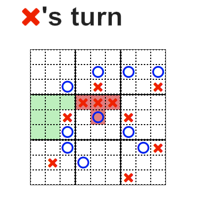
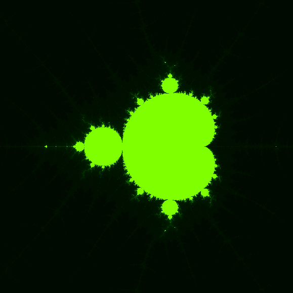

Ultimate tic tac toe

Demo
| Source
A welcome upgrade to one of the most boring game: the tic tac toe (Randall Munroe has a nice representation of the optimal strategy for this game).
Technologies used
- Node.js with socket.io
This was the main focus of this project. Node really shine when it comes to bidirectional communication and a multiplayer game is the perfect occasion to try out this great library.
-
Ember.js
At the beginning, I just used ember to take advantage of the goodness of two-way bindings. Since the board has a memory reprensation backed by regular array, it's a pain to keep the dom and the in-memory board in sync. Ember also make easy to get the state of each part of the board and apply the relevant css, thanks to the computed properties.
Web fractals

Demo (works best on chrome)
| Source
A small toy project to learn new things using the very well known Mandlebrot set.
Technologies used
- Canvas
I wanted to try out the 'new' canvas element in html5. The main goal was to
become familiar with the basic api of the 2d context of canvas.
- Web workers
This was another technology I wanted to explore and become more familiar with.
The main critic I hear about javascript is "javascript has only one thread to
execute code, how can you scale ?. It's true that if you need to do cpu intensive tasks, javascript is not ideal, but not with web workers anymore! The computation of a fractal is very cpu intensive and this was the ideal case study for web workers.
- No third party library
Almost. I still use lodash
to debounce a function or two, and Q to
make promise and allow for easy cancellation. But there is no trace of jQuery or something similar here. In modern browser it's not that difficult (querySelector !) and I don't target old browsers (no web workers or canvas).